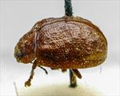
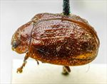

Click on images to enlarge
{kind=link}

Fig. 1. Paropsis rosea type specimen, lateral view
{kind=link}

Fig. 2. Paropsis rosea type specimen
{kind=link}
Fig. 3. Paropsis rosea, description
Name
Paropsis rosea Blackburn, 1896
Corresponds to
Very likely the same species as Ta56, and thus a synonym of P. baldiensis (Blackburn).
Diagnosis and Notes
Blackburn (1896) deals with P. rosea as part of his 'subgroup ii' (i.e., those species without "strongly marked characters", whose greatest height is not or scarcely in front of the middle of the elytral margin and whose elytra are depressed under the humeral callus). Within that group, he characterises it as:
A. Inner edge of humeral callus distinctly nearer to lateral margin of elytra than to suture;
B. Sides of prothorax more or less explanate;
C. Elytra not having well-defined continuous costae;
D. Puncturation of the elytra not particularly fine;
EE. Upper surface (including verrucae, which are very large) red or brown;
F. Prothorax much narrowed in front, widest considerably behind the middle.
From the description and the (rough) photo of the type, this seems to be the same as T. baldiensis (Ta56), a rather variable species. The length, A-A/BL ration, HCE/BL all fit nicely. The length/width of the pronotum that Blackburn gives (2.5) is on the upper end of the range for Ta56 (2.25-2.5). Ta56 is a species with a wide distribution and would be present at both the locations that Blackburn gives.
Type specimen
Location: BMNH
Label data: /“Type” (red-bordered circle)/ “H Vict. T.”/ “Blackburn coll. 1910-236.”/ “Paropsis rosea, Blackb.”/.
Female; Size: 7.85 (L) x 5.5 (W) x 3.25 (H) mm; A-A: 1.10 mm; HCE/BL: ~ 18.3% (estimated from a lateral view image)
Completely brown, verrucae are present but not conspicuous, interstices quite rugged, anterio-median depression well developed, discontinuous under humeral callus.
Original description
Translation of original description (Figure 3) by ChatGPT, 03/2026:
♀. Ovate, moderately broad, the greatest height (seen from the side) placed about the middle of the elytra (or even further back); rather less shining; bright rosy; antennae toward the apex and the body beneath more or less darkened; head closely and somewhat strongly punctulate; prothorax wider than long in the ratio about 2½ : 1, from the apex for a considerable distance beyond the middle dilated, near the apex transversely but scarcely distinctly impressed, less even, rather strongly and rather densely (at the sides densely and coarsely) punctulate; sides posteriorly rather strongly rounded, broadly but less strongly flattened, posterior angles absent; scutellum almost smooth, or finely coriaceous. Elytra rather strongly depressed below the humeral callus, behind the base strongly transversely impressed, rather coarsely and rather densely somewhat in rows (posteriorly less coarsely) punctate; furnished with rather large, unequal verrucae (these here and there transversely somewhat united), rather numerous and irregularly arranged; interstices (especially transversely) unevenly rugulose; marginal portion moderately broad, well separated from the disc (by a groove narrowly interrupted a little before the middle); humeral callus with its inner margin distinctly more distant from the suture than from the lateral margin of the elytra; basal ventral segment sparsely and somewhat strongly punctulate. Length 3⅔ lines [~7.75 mm]; width 2½ lines [~5.3 mm].
References
Blackburn, T. 1896, "Revision of the genus Paropsis. Part I", Proceedings of the Linnean Society of New South Wales, vol. 21, no. 4, 637-693 (page 664).
Copyright © 2026. All rights reserved.